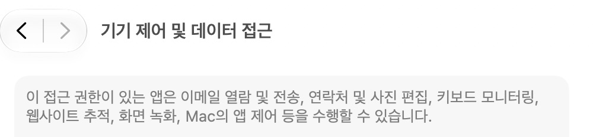
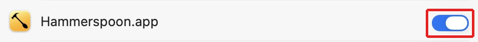
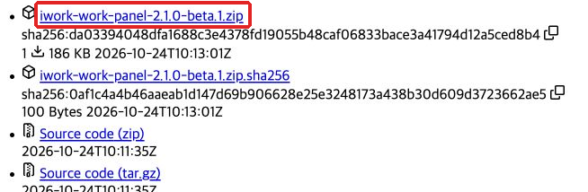
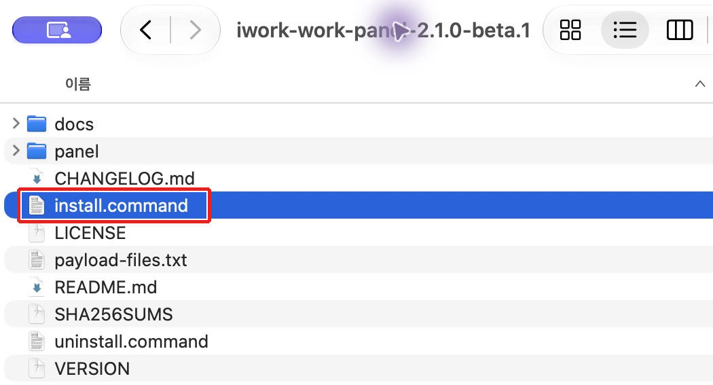
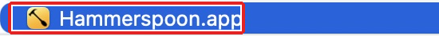
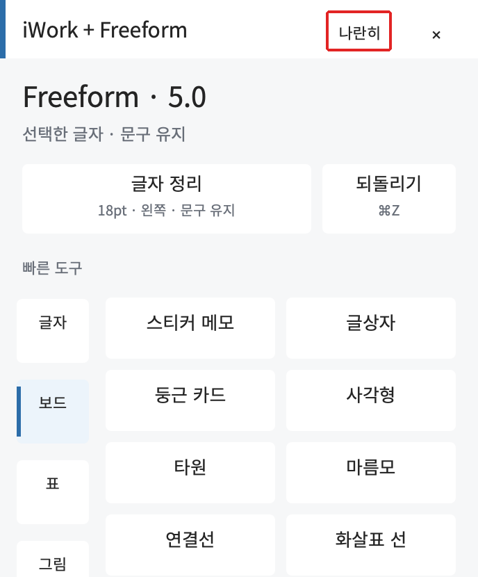
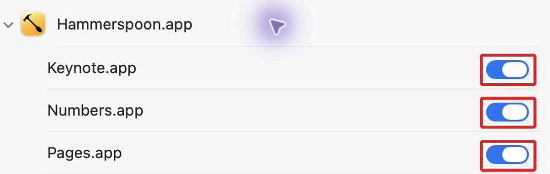
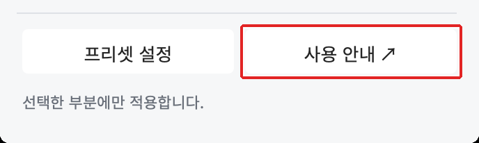

설치부터 패널 실행까지
옆에 두고 따라 하세요
Pages · Numbers · Keynote · Freeform용 Hammerspoon 편집 패널
설치 안내.html을 더블클릭하세요. 이미지가 보이도록 docs 폴더를 함께 두세요. Hammerspoon이나 iWork 앱을 아직 받지 않았다면 다운로드할 때는 인터넷이 필요합니다.1~8번을 순서대로 진행하고, 이미 끝낸 단계는 건너뛰세요. 빨간 박스는 누르거나 상태를 확인할 위치입니다. 권한 스위치는 꺼져 있을 때만 켜고, 이미 파란색이면 그대로 두세요. 캡처를 누르면 큰 이미지가 열립니다. 캡처는 macOS 27.0.1 기준이며 버전에 따라 메뉴 이름과 화면 모양이 다를 수 있습니다.
Hammerspoon과 WORK 패널은 무료이며 유료 Apple 개발자 계정이 필요하지 않습니다. Pages·Numbers·Keynote·Freeform은 별도로 준비합니다.
Hammerspoon 설치하기
아래 공식 사이트에서 Download latest release를 눌러 ZIP을 받습니다. 압축을 풀고 Hammerspoon.app을 응용 프로그램(Applications) 폴더로 옮긴 뒤 실행합니다.
확인 화면 위 메뉴 막대에 Hammerspoon 아이콘이 보입니다.
위로 ↑손쉬운 사용 권한 켜기
Apple 메뉴 → 시스템 설정 → 개인정보 보호 및 보안에서 손쉬운 사용을 엽니다. macOS 27처럼 “기기 제어 및 데이터 접근”으로 표시되는 경우에는 그 항목을 엽니다. Hammerspoon을 켜고, 목록에 없으면 +로 응용 프로그램 폴더의 Hammerspoon.app을 추가합니다. Mac 암호나 Touch ID 확인은 본인이 시스템 설정에서 진행합니다.


확인 Hammerspoon의 스위치가 파란색으로 켜져 있습니다. 이 권한으로 패널이 키 입력과 편집 메뉴를 제어합니다.
위로 ↑WORK 패널 설치 ZIP 받기
이 ZIP을 이미 내려받아 압축까지 풀었다면 4단계로 넘어가세요. 아래 릴리스 페이지의 Assets에서 iwork-work-panel-2.1.0-beta.2.zip을 내려받고 압축을 풉니다. Source code ZIP 대신 이름이 정확히 같은 설치용 ZIP을 고르세요. Hammerspoon 설치 ZIP과는 별도 파일입니다.

확인 압축을 푼 폴더 안에 install.command, panel 폴더, SHA256SUMS가 함께 있습니다.
위로 ↑install.command 실행하기
압축을 푼 폴더의 install.command를 더블클릭합니다. 터미널 창에서 설치가 끝날 때까지 기다립니다. 스크립트만 따로 옮기지 말고 panel 폴더 등과 함께 둔 상태에서 실행하세요. 기존 Hammerspoon 설정은 자동으로 백업합니다.

확인 터미널에 “설치 완료”와 “기존 설정 백업” 경로가 표시됩니다. 이 단계에서 명령어를 직접 입력할 필요는 없습니다.
위로 ↑Hammerspoon 설정 불러오기
메뉴 막대의 Hammerspoon 아이콘을 누르고 Reload Config를 선택합니다. WORK 패널 설정을 처음 불러오거나 업데이트했을 때 하는 단계입니다. 아이콘이 보이지 않으면 응용 프로그램의 Hammerspoon.app을 다시 엽니다. 콘솔 창의 File → Reload Config에서도 실행할 수 있습니다.

확인 메뉴 막대에 ✦ 편집 메뉴가 나타납니다.
위로 ↑문서나 보드에서 패널 열기
사용할 앱에서 새 문서 또는 보드를 엽니다. 메뉴 막대의 ✦ 편집 → 클릭 패널 보이기 / 숨기기를 누릅니다. 필요하면 패널 위의 나란히로 문서와 패널을 옆에 배치합니다.

확인 패널 상단에 현재 사용하는 Pages·Numbers·Keynote·Freeform 이름이 표시됩니다.
위로 ↑처음 편집할 때 앱 제어 허용하기
시험용 글자나 셀을 선택하고 패널의 글자·셀 프리셋을 누릅니다. “Hammerspoon이 Pages·Numbers·Keynote를 제어하려고 합니다”라는 macOS 창이 나타나면 사용할 앱에 대해 허용을 직접 누른 뒤 같은 버튼을 다시 실행합니다. 나중에는 시스템 설정 → 개인정보 보호 및 보안 → 자동화 → Hammerspoon에서 요청된 앱을 확인할 수 있습니다.

확인 사용할 앱의 제어 요청이 허용되어 있습니다. 앱을 처음 제어할 때 요청하므로 목록이 미리 없을 수 있습니다. Freeform은 손쉬운 사용을 이용하며 별도 자동화 창이 뜨지 않을 수 있습니다.
위로 ↑첫 편집과 사용 안내 확인하기
글자·셀·메모를 먼저 선택한 뒤 원하는 프리셋을 누릅니다. 서식이 바뀌는지 확인하고, 패널의 사용 안내를 눌러 현재 앱 설명을 읽어 보세요. Freeform에서는 메모·글상자 / 도형 연결 / 표 / 사진 바로가기 순서로 따라 할 수 있습니다.

확인 선택한 대상에 서식이 적용되고 현재 앱의 사용 안내가 열리면 준비가 끝났습니다. 시험 서식은 ⌘Z로 되돌릴 수 있습니다.
위로 ↑준비가 끝났습니다
문서에서 대상 선택 → 패널 분류 선택 → 버튼 클릭. 앱을 바꾸면 패널 도구도 전환됩니다. 다음에 사용할 때는 Hammerspoon을 실행하고 ✦ 편집에서 패널을 열면 됩니다.
앱별 사용 안내 열기 → ZIP에 동봉된 오프라인 안내
업데이트와 제거
새 설치 ZIP의 install.command를 실행하면 기존 설정을 백업하고 개인 프리셋과 패널 위치를 유지합니다. 제거할 때는 uninstall.command를 실행한 뒤 Hammerspoon에서 Reload Config를 누릅니다.
중간에 막혔나요?
install.command가 열리지 않거나 설치가 실패해요
설치용 ZIP을 받았는지, 압축을 완전히 풀었는지, install.command와 panel 폴더·SHA256SUMS가 같은 폴더에 있는지 확인하세요. macOS가 실행을 차단하면 표시된 안내를 읽고 출처를 확인하거나 아래 GitHub 설치 안내의 수동 설치 절차를 사용하세요. 터미널의 오류 문구가 남아 있으면 그 문구와 함께 문의해 주세요.
✦ 편집이나 패널이 보이지 않아요
응용 프로그램에서 Hammerspoon을 실행하고 메뉴 막대의 Hammerspoon → Reload Config를 누르세요. 이어 Pages·Numbers·Keynote 문서 또는 Freeform 보드를 클릭한 뒤 ✦ 편집 → 클릭 패널 보이기 / 숨기기를 선택합니다. Reload Config에서 오류가 뜨면 Hammerspoon Console의 오류 문구를 확인하세요.
권한 허용창이 안 뜨거나 버튼이 적용되지 않아요
글자·셀·대상체를 먼저 선택하고 패널의 앱 이름을 확인하세요. 손쉬운 사용(또는 기기 제어 및 데이터 접근)의 Hammerspoon이 켜져 있는지 확인합니다. iWork 앱 제어를 이미 거절했다면 자동화 → Hammerspoon에서 해당 앱을 켜고 다시 실행하세요. 자동화 목록이 없으면 사용할 앱에서 편집 버튼을 한 번 눌러 요청을 발생시킵니다. Freeform은 별도 자동화 창이 뜨지 않을 수 있습니다.
수동 설치
panel 폴더를 ~/.hammerspoon/iwork-work로 복사한 뒤 ~/.hammerspoon/init.lua의 실행 가능한 위치에 다음 한 줄을 추가합니다.
dofile(hs.configdir .. "/iwork-work/main.lua")Hammerspoon에서 Reload Config를 누릅니다. 기존에 직접 연결한 같은 패널의 dofile 줄이 있다면 새 위치로 교체하여 한 번만 불러옵니다. macOS가 스크립트 실행을 차단하면 시스템 안내를 확인하고 출처와 내용을 검토하세요.
설치 묶음 2.1.0-beta.2 · 안내 보완판 · 편집 런타임 2.1.0
현재 한국어 Pages·Numbers·Keynote Creator Studio 15.4 / Freeform 5.0 기준입니다. 다른 Mac·언어·일부 고급 기능은 추가 확인이 필요합니다. 검증 범위 · 사이트 설치 안내 ↗ · GitHub ↗
안내 작성: 2026-10-26. 사용자 문서·개인 설정·권한은 배포본에 포함하지 않습니다.